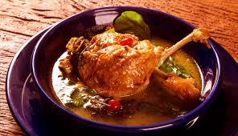

Pato no Tucupi

A origem do prato pato no tucupi é indígena. Esse fato é corroborado pela utilização milenar do tucupi pelas populações indígenas para a conservação de carne moqueada.
Sabia que o relativo isolamento da região Norte do país (devido a dificuldade crônica de acesso, consequência da sua geografia) permitiu que a cozinha paraense se mantivesse extraordinariamente próxima da sua origem e tradições originais?
Informações da receita
Ingredientes
Para a vinha d’alho
Modo de preparo
Pré-Preparo: Vinha d’Alho
Para preparar a vinha d’alho, basta misturar todos os ingredientes.
O pato:
- Limpe o pato e o lave com algumas folhas de chicória e limão.
- Deixe-o de véspera na vinha d’alho com alho, sal e pimenta-do-reino.
- Corte-o em pedaços e refogue-o com cebola, alho, tomate bem picados, com a manteiga e o azeite.
- Depois de refogado, asse-o de forno até dourar.
O Tucupi:
Ferva o tucupi com sal, dentes de alhos inteiros apenas amassados e chicória.
Reserve.
Não aconselhamos que você faça o tucupi em casa caso não tenha experiência. A mandioca tem propriedades tóxicas se não for fervida na temperatura certa e pelo tempo certo.
Então caso você nunca tenha feito isso antes, procure o Tucupi já pronto no mercado que é mais garantido.
O Jambu:
Esse ingrediente é fundamental para que a receita tenha um sabor verdadeiramente paraense.
- Lave bem o jambu;
- Retire as flores (se houver);
- Afervente em água e sal até amolecer;
- Escorra e coloque no tucupi.
Molho de Pimenta:
Finalização do Pato no Tucupi
- Quando o pato estiver macio e tostado, junte em uma molheira o tucupi e o jambu.
- Quando levantar fervura, estará pronto.
- Sirva com farinha de mandioca paraense e arroz branco.